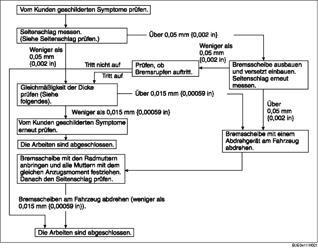

1. Bremsrupfen zeigt sich an den folgenden 3 Merkmalen:
1. Das Lenkrad vibriert in Richtung des Lenkradeinschlags. Diese Eigenschaft macht sich am häufigsten bei einer Fahrgeschwindigkeit von 100 - 140 km/h {62,1 - 86,8 mph}bemerkbar.
1. Beim Bremsen vibriert die Bodengruppe. Das Ausmaß der Vibration ist nicht von der Fahrgeschwindigkeit abhängig.
1. Beim Bremsen versucht eine pulsierende Kraft, die Bremsbeläge zurückzustoßen. Die Vibration wird auf das Bremspedal übertagen.
2. Bremsrupfen wird im allgemeinen durch folgende Ursachen hervorgerufen:
1. Wenn der Schlag 10 mm {0,39 in} von der Kante der Bremsscheibe entfernt mehr als 0,05 mm {0,002 in} beträgt, tritt wegen ungleichmäßigem Kontakt mit dem Bremsbelag ungleichmäßiger Verschleiß an der Bremsscheibe auf.
2. Wenn der Schlag geringer als 0,05 mm {0,002 in} ist, tritt kein ungleichmäßiger Verschleiß auf.
1. Wiederholte Vollbremsungen erhöhen die Temperatur der Bremsscheibe stellenweise auf ca. 1.000°C {1.832°F}. Diese Temperaturen verursachen eine Verformungen der Bremsscheibe.
1. Wenn ein Fahrzeug für längere Zeit unter feuchten Bedingungen abgestellt wird, können die Reibflächen der Bremsscheiben korrodieren.
2. Da die Dicke der Korrosion ungleichmäßig ist, entsteht ein unterschiedlicher Reibungskoeffizient. Die Unterschiede in der Reibung bewirken wellenförmige Reibungskräfte und dadurch wechselnde Reaktionskräfte.

1. Zum Sichern der Bremsscheibe und der Nabe, eine Unterlegscheibe (Stärke 10 mm {0,39 in}, Innendurchmesser über 12 mm {0,47 in}) zwischen Radbolzen und Radmutter platzieren, danach alle Radmuttern festziehen.
2. Alle Radmuttern mit dem gleichen Anzugsmoment festziehen und die Messuhr 10 mm {0,39 in} vom Rand der Bremsscheibe an die Reibfläche der Bremsscheibe ansetzen.
3. Bremsscheibe einmal drehen und Schlag messen.
1. Reibfläche zwischen Bremsscheibe und Bremsbelag mit einem Bremsenreiniger reinigen.
2. Dicke an angegebenen Punkten mit einem Mikrometer messen.
3. Höchst- vom Mindestwert abziehen. Falls der Unterschied den Grenzwert überschreitet, die Bremsscheibe mit einem Abdrehgerät abdrehen.
1. Stärke der Bremsscheibe messen.
1. Fahrzeug aufbocken und mit Unterstellböcken absichern.
2. Räder und Reifen abnehmen.
3. Stärke der Bremsbeläge prüfen.
4. Die Beläge paarweise (rechtes und linkes Rad) ersetzen, wenn einer der Beiden bei der Minimalstärke oder darunter angekommen ist.